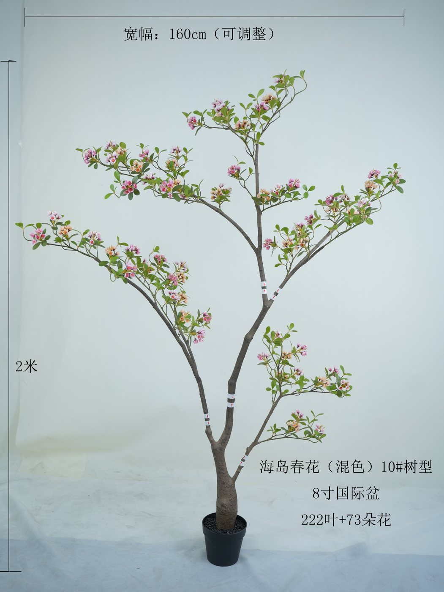
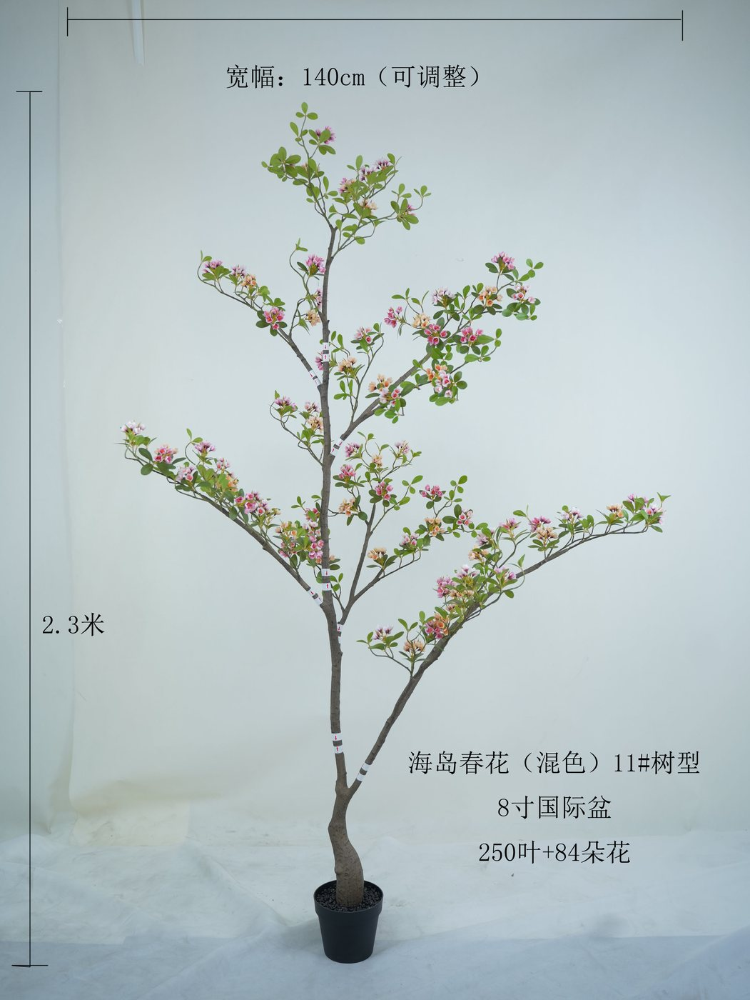

Flowering Trees
Island Spring Bloom, Mixed Colors
Island Spring Bloom, Mixed Colors is a seasonal flowering accent for gardens, patios, and commercial landscaping. Photos show the actual product; exact dimensions, packing, MOQ, lead time and price are confirmed by the seller on inquiry.
Opens your email application; sending happens there.
Product information
Island Spring Bloom, Mixed Colors is a seasonal flowering accent for gardens, patios, and commercial landscaping. Photos show the actual product; exact dimensions, packing, MOQ, lead time and price are confirmed by the seller on inquiry.
Specifications
| Product code | LC-N088 |
|---|